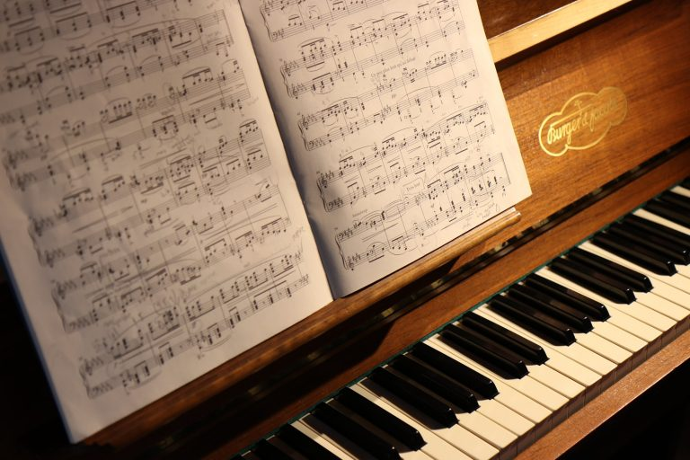

As you grow as a musician, you’ll develop your own unique process of
songwriting, but here’s my personal process.

1. Decide on a general song idea.
What I mean is to decide on a theme, or perhaps an audience. For instance,
you’d think, “I’ll write this one to my husband about our wedding,” or
“This song will be centered on the political unrest in Africa.” Sometimes
it’s easier to consider the type of song you want to write before you
consider the idea of the song. Do you want to write a country song or a
jazz song? Classical or pop? Will it be a happy, upbeat song, or a sad,
melancholic one? Deciding on these general themes ahead of time can help
guide you as you dive deeper into writing piano songs.
2. Choose a melody and harmony.
Once you know, more or less, what you want to be writing piano music about
it’s time to consider your melody and harmony. The melody and harmony are
both key elements of any good piano music. It doesn’t matter whether you
use piano music writing software or apps – all good piano songs must have
captivating melodies and harmonies. The genre and style don’t matter here!
The melody is the part of the song that’ easy to understand – it’s what
you hum along to when you hear your favorite son on the radio. Usually, if
it’s a song with lyrics, you’ll hear the lyrics most often in your head.
When you are writing piano music, know that the harmony is the prat that
supports the melody line. These always are comprised of more than one
note. They are read up and down instead of left to right, as melodies are.
Generally, harmonies are indicated by chords. A series of these chords
together is a chord progression.
3. Choose a key and a tempo.
Each key and each tempo can affect listeners differently and are essential
elements in what kind of atmosphere or mood that your song possesses.
Before you start playing around with keys and tempos, take the time to
warm up. Here are some simple exercises you can do:Play scales and chords
in the keys that you’re comfortable with, then choose a key that feels
like it fits the theme of what you’re conveying. Pick a tempo that matches
your general song idea. Does what you’re saying call for high-energy,
high-tempo music in the key of E (bright and cheerful), or does it call
for a serene, slow ballad sound in the calm key of C?
4. Learn the I-IV-V-vi chords, if you haven’t yet.
This means the root chord (the chord that shares your key’s name), the
dominant (the fifth chord above the root), the subdominant (the fourth
chord above the root), and six chord (a minor chord). Some progressions,
called the Nashville progression or the pop progression, consist of these.
Let’s say that you’ve picked C major for your song. You’d play C, G, Am,
and F. Play with fingers 1, 3, and 5 in both hands at the same time.
5. Play the chords in different orders.
Play four beats for each chord in the key and tempo that you’ve chosen,
going from one chord to the next in different orders. For instance, play C
for four beats, then G for four beats, then Am, then F, then C again. Go
slowly and listen carefully. Mix it up and change it around! Start with
Am, then F, then C, and end with G. You’ll eventually find a progression,
or order, that appeals to you and fits the song’s theme.
6. Write down your progression and keep playing.
Take note of the order that you like best and then play it over and over,
thinking about the theme that you’ve decided upon. If you’ve dedicated the
song to your mom, then keep her image in your mind, or better yet, have a
photo of her on your piano. Listen carefully to the chords and
concentrate, and you may be able to “hear” lyrics begin to pop up in your
head.
7. Jot down everything.
Every word, every style, phrase, every chord change should go down on that
staff paper, even if you think they sound silly or they don’t sound good
together. Something that sounds terrible today may sound great next week,
or maybe even in another song that you find yourself working on down the
road. Think of yourself simply as a reporter, jotting down what you’re
hearing. When you write down your music, keep it simple. Start each
measure with the next chord change and make the first few pieces smaller
in size. Every four or so measures is the perfect place to start!
8. Think of your song’s lyrics as a box within a box, within a box.
One helpful tip for songwriting, which I learned in an online course from
a professor of songwriting at the Berkelee College of Music, is to think
of a great song unfolding like a small box that’s found within a larger
box, which is found in a larger box still. The first box, or verse, that
you open should give a general view of the world that you’ve created in
your song. You can open with something general, just like you’re beginning
an important conversation. In the second verse, reveal more. If you’re
writing a song about a current issue or political statement, then the
second verse could mean articulating your views more emphatically and
clearly.
9. Build the bridge.
Now, remember, not every song has to have a bridge. Many songs don’t. But
I think that it can be a useful element. It can break up a song if you’ve
chosen to change keys for it or simply change the progression. But more
importantly, the bridge can be the very climax of a song. Think of a
ballad from a great singer, such as Whitney Houston or Carrie Underwood,
and you’ll probably remember her big high note at the end of the bridge.
This moment may be what takes your song from being pedestrian and
simplistic to something really memorable. To build the bridge, try playing
only the six and fifth chords, or the four and the second chords with two
beats each.
10. Make a final draft.
Some songs may be written in a matter of minutes, like John Denver’s
“Annie’s Song”, but most take a few days or weeks to polish. Over time,
making notes and changes on the original staff paper, a final version will
come together. Make a final draft on a new sheet of staff paper with
lyrics. Finally, remember that songwriting is a creative art. While I’ve
laid out a formulaic method for how to do it, it’s important to know that
it’s a method that’s meant to be bent and broken. The most important step
of all in writing piano music is the K.I.S.S. idea: “Keep it simple,
silly.”